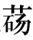
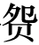

扁鹊者，勃海郡郑人也，姓秦氏，名越人。少时为人舍长【舍长：招待宾客之所的管理人。】。舍客长桑君过，扁鹊独奇之，常谨遇之。长桑君亦知扁鹊非常人也。出入十余年，乃呼扁鹊私坐，间与语曰：“我有禁方，年老，欲传与公，公毋泄。”扁鹊曰：“敬诺。”乃出其怀中药予扁鹊：“饮是以上池之水，三十日当知物矣。”乃悉取其禁方书尽与扁鹊。忽然不见，殆非人也。扁鹊以其言饮药三十日，视见垣一方人。以此视病，尽见五藏【藏：通“脏”。】症结，特【特：只，只不过。】以诊脉为名耳。为医或在齐，或在赵。在赵者名扁鹊。
扁鹊，是勃海郡郑地人，姓秦，名越人。他年轻时担任人家客馆的主管。一次，有个叫长桑君的客人从此地经过，住在客馆，只有扁鹊觉得他是一个非常奇特的人，所以总是恭恭敬敬地对待他。长桑君也知道扁鹊不是一般人。他在这家客馆来来去去长达十多年，后来终于把扁鹊叫进来单独和他坐在一起，悄悄地对他说：“我身上有秘藏的药方，我现在老了，想把它传给您，您千万不要泄露出去。”扁鹊说道：“遵命。”于是长桑君拿出怀中的药交给扁鹊，说：“用没有落地的露水送服此药，三十天以后，就可以洞彻万物了。”于是把他的秘方拿出来全部交给扁鹊。转瞬之间，长桑君就不见了踪影，他大概不是凡人吧。扁鹊按照他的吩咐服药三十天以后，果然能够隔着墙看见另一边的人。他凭借这种本领看病，完全能够看清人体五脏的疾病所在，只不过以诊脉为名而已。他有时候在齐国行医，有时候又在赵国。在赵国时候人们称他为扁鹊。
当晋昭公时，诸大夫强而公族弱，赵简子为大夫，专国事。简子疾，五日不知人，大夫皆惧，于是召扁鹊。扁鹊入视病，出，董安于问扁鹊，扁鹊曰：“血脉治【治：正常。】也，而何怪！昔秦穆公尝如此，七日而寤。寤之日，告公孙支与子舆曰：‘我之帝所甚乐。吾所以久者，适有所学也。帝告我：“晋国且大乱，五世不安。其后将霸，未老而死。霸者之子且令而国男女无别。”’公孙支书而藏之，秦策于是出。夫献公之乱，文公之霸，而襄公败秦师于殽而归纵淫，此子之所闻。今主君之病与之同，不出三日必间，间必有言也。”
晋昭公在位时，各大夫势力强盛而国君的力量却很薄弱，赵简子是晋国的大夫，独揽大权。有一次赵简子生病，一连昏迷五天不省人事，大夫们都非常害怕，于是把扁鹊召来治疗。扁鹊进来察看赵简子的病情，然后就走了出去，大夫董安于向扁鹊询问病情，扁鹊答道：“他的血脉十分正常，你们有什么可大惊小怪的！过去秦穆公也曾出现过这种情况，昏迷了整整七天，然后才苏醒过来。等到苏醒的那天，他对公孙支和子舆说：‘我到了天帝那里非常快乐。我之所以在那儿呆了这么久，是因为恰好碰到天帝指教我。天帝告诉我说：“晋国即将大乱，延续五代都不会安宁。此后将有人成为霸主，他称霸不久就会死去。这位霸主的儿子将会使国家男女淫乱。”’公孙支将秦穆公的话记录下来收藏好，秦国的史书便据此记载了这件事。晋献公晚年国内大乱，晋文公称霸，晋襄公在殽山打败秦军以后放纵淫乱，这些您都是听说过的。现在主君的病情与秦穆公相同，不出三天就会痊愈，痊愈之后一定有话要讲。”
居二日半，简子寤，语诸大夫曰：“我之帝所甚乐，与百神游于钧天【钧天：天的中央。】，广乐九奏万舞，不类三代之乐，其声动心。有一熊欲援我，帝命我射之，中熊，熊死。有罴来，我又射之，中罴，罴死。帝甚喜，赐我二笥【笥：盛物的方形竹器。】，皆有副【副：装饰，首饰。】。吾见儿在帝侧，帝属我一翟犬，曰：‘及而子之壮也以赐之。’帝告我：‘晋国且世衰，七世而亡。嬴姓将大败周人于范魁之西，而亦不能有也。’”董安于受言，书而藏之。以扁鹊言告简子，简子赐扁鹊田四万亩。
只过了两天半，赵简子就苏醒了，他对众大夫说：“我到天帝那里非常快乐，与百神在天的中央游玩，那里有各种乐器，演奏出许多乐曲，还有各种各样的舞蹈，与上古三代时期的乐舞不同，那里的乐声动人心弦。有一只熊想要抓住我，天帝命我用弓箭射杀它，结果我射中了熊，熊就死了。又有一只罴向我走来，我又射它，射中了，结果罴也死了。天帝很高兴，就赐给我两只竹笥，里面都装着首饰。我看到我的儿子在天帝身旁，天帝交给我一只翟犬，说道：‘等你儿子长大以后，就把这个赐给他。’天帝还告诉我：‘晋国即将一代代地衰败下去，再过七代就会灭亡。嬴姓的秦国将在范魁的西边打败周朝人，然而他们也不能拥有周朝的政权。’”董安于听了赵简子的话以后，记录并收藏起来。有人将扁鹊所说的话告诉了赵简子，赵简子于是赏赐给扁鹊田地四万亩。
其后扁鹊过虢。虢太子死，扁鹊至虢宫门下，问中庶子喜方者曰：“太子何病，国中治穰【穰：通“禳”。】过于众事？”中庶子曰：“太子病血气不时，交错而不得泄，暴发于外，则为中害。精神不能止邪气，邪气畜积而不得泄，是以阳缓而阴急，故暴蹶而死。”扁鹊曰：“其死何如时？”曰：“鸡鸣至今。”曰：“收乎？”曰：“未也，其死未能半日也。”“言臣齐勃海秦越人也，家在于郑，未尝得望精光侍谒于前也。闻太子不幸而死，臣能生之。”中庶子曰：“先生得无诞之乎？何以言太子可生也！臣闻上古之时，医有俞跗，治病不以汤液醴洒，镵石【石：石针。】挢引【挢引：导引。】，案【案：通“按”。】扤【扤：摇动。】毒熨，一拨见病之应，因五藏之输【输：通“腧”，人身上的穴位。】，乃割皮解肌，诀脉结筋，搦髓脑，揲【揲：持。】荒【荒：通“肓”，心脏与横膜之间。】爪【爪：梳理。】幕【幕：通“膜”，指横膈膜。】，湔【湔：浣洗。】浣肠胃，漱涤五藏，练精易形。先生之方能若是，则太子可生也；不能若是而欲生之，曾不可以告咳婴之儿。”终日，扁鹊仰天叹曰：“夫子之为方也，若以管窥天，以郄【郄：同“隙”。】视文。越人之为方也，不待切脉望色听声写形，言病之所在。闻病之阳，论得其阴；闻病之阴，论得其阳。病应见于大表，不出千里，决者至众，不可曲止也。子以吾言为不诚，试入诊太子，当闻其耳鸣而鼻张，循其两股以至于阴，当尚温也。”
后来扁鹊外出行医路过虢国。正赶上虢国太子病死，扁鹊就来到虢国宫门外，向喜好方术的中庶子询问道：“太子得了什么病，为什么全国都在举行祝祷活动而很多事都停止了呢？”中庶子回答说：“太子患有气血失调的病，运行交错而无法宣泄，因此突然发作于外部，这就使内脏受到伤害。身体内部的正气无法抑制邪气，而邪气聚集起来而不能发散出来，因此太子的阳脉松弛而阴脉急迫，所以突然间昏倒而死。”扁鹊问：“太子死了多长时间？”中庶子答道：“从鸡鸣时一直到现在。”扁鹊又问：“他的尸体收殓了吗？”中庶子答道：“还没有收殓，太子死去还不到半天。”扁鹊说：“请您转告国君，就说我是齐国渤海郡的秦越人，家住郑地，没有得到机会仰望国君的神采而拜见并侍奉在他身边。听说太子不幸亡故，我可以让他活过来。”中庶子说：“先生不会是在胡言乱语吧？您凭什么说太子能够活过来呢！我听说上古时代，有位著名的医生叫俞跗，他治病不用汤剂、药酒、石针、导引、按摩、药熨，只要解开衣服看一下就知道疾病所在，然后沿着五脏的腧穴，剖开皮肉，疏通经脉，结扎筋腱，按动髓脑，触动膏肓，疏理隔膜，清理肠胃，洗涤五脏，修炼精气，变换形体。先生的医术如果能够达到这种程度，那么太子就能死而复生了；如果先生达不到这种程度却想让太子复活，这简直连刚刚会笑的婴儿都骗不了。”许久，扁鹊仰天长叹道：“先生所说的那些治疗方法，就好比从竹管里窥视天空，从缝隙中观看花纹。我的治疗方法，不需要切脉、看气色、听声音、观察病人的身体形态，就能够说出病症所在。知道疾病的外在表现就可以推知内在的病因；知道疾病的内因就可以推知其外在表现。人体的疾病会通过外表反映出来，根据这一点，就可以为千里之外的病人诊断，诊病的方法很多，决不能只停留在单一的角度看问题。您觉得我的话不真实，可以试试进去诊察太子，您会听到他耳中有鸣响，看到他鼻翼微微张合，沿着他的双腿一直摸到阴部，您会觉得那里还有些温热。”
中庶子闻扁鹊言，目眩然而不瞚【瞚：通“瞬”，眨眼。】，舌挢然【挢然：翘起的样子。】而不下，乃以扁鹊言入报虢君。虢君闻之大惊，出见扁鹊于中阙，曰：“窃闻高义之日久矣，然未尝得拜谒于前也。先生过小国，幸而举之，偏国寡臣幸甚。有先生则活，无先生则弃捐填沟壑，长终而不得反。”言未卒，因嘘唏服臆【服臆：同“愊臆”，因悲伤而气满郁塞。】，魂精泄横，流涕长潸，忽忽承，悲不能自止，容貌变更。扁鹊曰：“若太子病，所谓‘尸蹶’者也。夫以阳入阴中，动胃繵缘，中经维【维：阻塞，壅塞。】络，别下于三焦、膀胱，是以阳脉下遂，阴脉上争，会气闭而不通，阴上而阳内行，下内鼓而不起，上外绝而不为使，上有绝阳之络，下有破阴之纽，破阴绝阳，色废脉乱，故形静如死状。太子未死也。夫以阳入阴支兰藏者生，以阴入阳支兰藏者死。凡此数事，皆五藏蹙中之时暴作也。良工取之，拙者疑殆。”
扁鹊乃使弟子子阳厉针砥石，以取外三阳五会。有间，太子苏。乃使子豹为五分之熨，以八减之齐和煮之，以更熨两胁下。太子起坐。更适阴阳，但服汤二旬而复故。故天下尽以扁鹊为能生死人。扁鹊曰：“越人非能生死人也，此自当生者，越人能使之起耳。”
中庶子听了扁鹊的话之后，目光呆滞，瞪大了眼睛眨也不眨，舌头翘着放不下来，于是他进去把扁鹊的话告诉了虢国国君。虢君听后十分惊讶，连忙出来在宫廷的中门召见扁鹊，对他说：“我久闻您崇高的品德，可是一直没有机会拜见您。先生路过我们这个小国，希望您能帮助我们，作为这个偏僻小国的国君，我实在太荣幸了。有先生在，太子就能活过来；如果没有先生，太子就只能抛尸荒野而填塞沟壑，永远也回不来了。”他的话还没有说完，就悲伤抽泣，气郁胸中，精神恍惚，涕泪长流，闪闪的泪珠沾在睫毛上，悲痛得不能自已，就连容貌、神情都变了样子。扁鹊说：“像太子现在得的这种病，就是所谓的‘尸蹶’。这种病是由于阳气进入阴脉之中，脉气缠绕对胃造成冲击，经脉受到损伤，脉络受到阻塞，分别下注入三焦、膀胱，所以阳脉下坠，阴脉上升，阴阳二气相互争扰，使得气闭不通，阴气逆而上行，阳气在内运行，下气在内鼓动而不能上升，上气在外被阻绝而不能被役使，在上有隔绝阳气的脉络，下有破坏阴气的筋纽，阴气被破坏、阳气被阻隔，就使人面色衰败、血脉混乱，所以会使身体安静得如同死去一样。其实太子并没有真的死去。阳气入袭阴气而阻绝脏气的疾病可以治愈，如果是阴气入袭阳气而阻绝脏气，那就必死无疑。这些情况，都是在五脏气机逆乱的时候突然发作的。良医能够把握变化的病理，而庸医却会因为困惑而使病人更加危险。”
扁鹊于是吩咐他的弟子子阳打磨针石，然后用石针来刺三阳、五会等经络腧穴。过了不大一会儿，太子就苏醒过来了。扁鹊就让弟子子豹准备能够入体五分的药熨，与八减方的药剂一起煎煮之后交替在太子的两胁下熨治。这样一来太子就能坐起来了。此后扁鹊又进一步调和太子体内的阴阳二气，只服用了二十天汤药身体就复原了。所以天下人都以为扁鹊能够令死人复活。扁鹊说：“其实我并不能让死人复活，因为病人本来就是活的，我只不过是让他恢复健康罢了。”
扁鹊过齐，齐桓侯客之。入朝见，曰：“君有疾在腠理【腠理：皮肤与肌肉之间。】，不治将深。”桓侯曰：“寡人无疾。”扁鹊出，桓侯谓左右曰：“医之好利也，欲以不疾者为功。”后五日，扁鹊复见，曰：“君有疾在血脉，不治恐深。”桓侯曰：“寡人无疾。”扁鹊出，桓侯不悦。后五日，扁鹊复见，曰：“君有疾在肠胃间，不治将深。”桓侯不应。扁鹊出，桓侯不悦。后五日，扁鹊复见，望见桓侯而退走。桓侯使人问其故。扁鹊曰：“疾之居腠理也，汤熨之所及也；在血脉，针石之所及也；其在肠胃，酒醪之所及也；其在骨髓，虽司命无奈之何。今在骨髓，臣是以无请也。”后五日，桓侯体病，使人召扁鹊，扁鹊已逃去。桓侯遂死。
扁鹊来到齐国，齐桓侯把他当成贵客接待。他入宫拜谒齐桓侯，说：“国君有小病在皮肤与肌肉之间，如果不及时治疗，病情将会加重。”齐桓侯说道：“我没有病。”扁鹊出去以后，桓侯对身边的人说：“医生总是喜好功利，想通过治疗没病的人来显示自己的业绩。”五天以后，扁鹊又进宫拜见，说：“您的病已经到了血脉之中，如果不医治的话就会加重了。”桓侯又说：“我没病。”扁鹊出去以后，桓侯很不高兴。又过了五天，扁鹊再次进宫拜见，说：“您的病已到了肠胃之间，再不治疗就会加重了。”这一次桓侯没有回答他。扁鹊出去以后，桓侯很不高兴。又过了五天，扁鹊再次进宫拜见，可是他看见桓侯以后就退出去跑掉了。桓侯派人前去问他为什么这样做。扁鹊回答说：“疾病在皮肉之间，凭借汤剂、药熨的效力就可以达到治疗效果；病在血脉之中，依靠针刺和砭石的效力就可以达到治疗效果；病在肠胃之中，需要利用药酒达到治病的目的；如果病在骨髓，即便是掌管生命的神也没有什么办法了。如今国君的病已经到了骨髓，我因此不敢请求为他治疗了。”五天以后，桓侯果然患了重病，于是派人去召扁鹊，可是扁鹊早就逃走了。桓侯就这样病死了。
使圣人预知微，能使良医得蚤从事【从事：治疗。】，则疾可已，身可活也。人之所病，病疾多；而医之所病，病道少。故病有六不治：骄恣不论于理，一不治也；轻身重财，二不治也；衣食不能适，三不治也；阴阳并，藏气不定，四不治也；形羸不能服药，五不治也；信巫不信医，六不治也。有此一者，则重难治也。
扁鹊名闻天下。过邯郸，闻贵妇人，即为带下医；过雒阳，闻周人爱老人，即为耳目痹医；来入咸阳，闻秦人爱小儿，即为小儿医：随俗为变。秦太医令李酰自知伎不如扁鹊也，使人刺杀之。至今天下言脉者，由扁鹊也。
如果圣明之人能够预先知道没有显露出来的疾病征兆，能够让良医对自己及时进行治疗，那么疾病就可以被治好，病人也能够存活。人们所忧虑的，是疾病太多；而医生所忧虑的，是治疗的方法太少。因此，有六种患病的情形不能医治：骄纵而不讲道理，是第一种不能医治的情形；轻视自己的身体而重视钱财，是第二种；衣着饮食调节不当，是第三种；阴阳错乱，脏腑精气失调，是第四种；身体过于羸弱，不能服药，是第五种；相信巫术而不相信医术，是第六种。如果有上述六种情形中的一种，疾病就很难治疗了。
扁鹊名声传遍天下。他经过赵国都城邯郸时，听说当地有尊重妇女的习俗，就做了妇科医生；经过雒阳，听说当地人敬重老人，他就做了专门治疗耳聋、眼花以及四肢痹痛等疾病的医生；到了咸阳，他听说秦国人爱护小孩，于是就做了儿科医生：总之，他随着各地的风俗习惯来改变自己的主治方向。秦国的太医令名叫李酰，他知道自己的医术比不上扁鹊，就派人刺杀了他。直到今天，天下谈论诊脉的人，都遵循扁鹊的理论。
太仓公者，齐太仓长，临菑人也，姓淳于氏，名意。少而喜医方术。高后八年，更受师同郡元里公乘阳庆。庆年七十余，无子，使意尽去其故方，更悉以禁方予之，传黄帝、扁鹊之《脉书》，五色诊病，知人死生，决嫌疑，定可治，及药论，甚精。受之三年，为人治病，决死生多验。然左右行游诸侯，不以家为家，或不为人治病，病家多怨之者。
文帝四年中，人上书言【言：控告，议论。】意，以刑罪当传【传：驿车。】西之长安。意有五女，随而泣。意怒，骂曰：“生子不生男，缓急无可使者！”于是少女缇萦伤父之言，乃随父西。上书曰：“妾父为吏，齐中称其廉平，今坐法当刑。妾切痛死者不可复生而刑者不可复续，虽欲改过自新，其道莫由【其道莫由：无路可走。】，终不可得。妾愿入身为官婢，以赎父刑罪，使得改行自新也。”书闻，上悲其意，此岁中亦除肉刑法。
太仓公，是齐国负责管理都城粮仓的长官，临菑人，复姓淳于，名意。他年轻的时候非常喜欢研究医术。汉高后八年（前180年），他再次拜同郡元里的公乘阳庆为师学习医术。当时，阳庆已经七十多岁了，没有子嗣，他让淳于意把过去学到的医方全部抛弃掉，然后把自己的秘方全部给了他，还向他传授黄帝、扁鹊的《脉书》，以及通过观察面部不同颜色进行诊断的方法，以此来预知病人的生死，决断疑难疾病，决定是否可以医治，还传授给他有关药物的理论，非常精辟。淳于意学习三年之后，给人治病，判断生死，多能应验。然而，他在各诸侯国之间行医，不把自己的家当作家，有时候不愿给人治病，所以很多病人都对他心怀怨恨。
文帝四年（前176年），有人上书朝廷状告淳于意，根据其罪行，应当用驿车将他向西押解到京城长安。淳于意有五个女儿，她们都跟在父亲身后哭泣。淳于意十分恼怒，骂道：“生孩子不生男孩，在危急时刻就没有能派上用场的！”最小的女儿缇萦听了父亲的话很是伤感，于是跟随父亲西行。到了长安以后，缇萦上书朝廷说：“我的父亲是朝廷任命的官吏，齐国人都称赞他廉洁、公正，如今他因为犯法而被判刑。我很痛心死者不能复生而受刑致残者也不能康复，他们就算是想改过自新，也无路可走，终究实现不了愿望。我愿意进入官府做奴婢，以此来为父亲赎罪，使他能够获得改过自新的机会。”皇帝看过奏书以后，十分怜悯她的心意，于是将淳于意赦免，并在这一年废除了肉刑。
意家居，诏召问所为治病死生验者几何人也，主名为谁。
诏问故太仓长臣意：“方伎【方伎：即“方技”，泛指医术、医药等相关知识。】所长，及所能治病者？有其书无有？皆安受学？受学几何岁？尝有所验，何县里人也？何病？医药已，其病之状皆何如？具悉而对。”臣意对曰：
自意少时，喜医药，医药方试之多不验者。至高后八年，得见师临菑元里公乘阳庆。庆年七十余，意得见事之。谓意曰：“尽去而方书，非是也。庆有古先道遗传黄帝、扁鹊之《脉书》，五色诊病，知人生死，决嫌疑，定可治，及药论书，甚精。我家给富，心爱公，欲尽以我禁方书悉教公。”臣意即曰：“幸甚，非意之所敢望也。”臣意即避席再拜谒，受其《脉书上下经》《五色诊》《奇咳术》《揆度》《阴阳外变》《药论》《石神》《接阴阳》禁书，受读解验之，可一年所。明岁即验之，有验，然尚未精也。要事之三年所，即尝已为人治，诊病决死生，有验，精良。今庆已死十年所，臣意年尽三年，年三十九岁也。
淳于意住在家里，皇上下诏书问他为人治病诊断生死应验的有多少人，这些病人都叫什么名字。
诏书问前任太仓长淳于意：“你的医术有什么专长，能治疗哪些疾病？有没有医书？在哪里学的医术？学了多少年？曾经治好的病人，都是什么地方的人？他们得了什么病？用药治疗以后，他们的病情都怎样？请全部详细地回答这些问题。”淳于意回答说：
我从年轻的时候开始，就非常喜欢医术，曾经试着用医术方剂给人治病，可是很多时候都没有效验。到了高后八年，我得以向临菑元里的公乘阳庆学习医术。那时候阳庆已经七十多岁了，我得以拜谒并侍奉他。他对我说：“把你过去所学的医书全部抛弃掉，这些都是不对的。我有古代前辈医家传下来的黄帝、扁鹊的《脉书》，以及通过观察面部不同颜色进行诊断的方法，以此来预知病人的生死，决断疑难疾病，决定是否可以医治，以及有关药物的理论，非常精辟。我家里比较富裕，心里很喜欢您，所以打算把我珍藏的秘方全部传授给您。”我当即说道：“真是荣幸，这简直不是我敢奢望的。”我马上离开座席对他拜了两次，接受了他传给我的《脉书上下经》《五色诊》《奇咳术》《揆度》《阴阳外变》《药论》《石神》《接阴阳》等医学秘书，加以学习、理解和体验，大约用了一年的时间。到了第二年，我就开始对这些医术加以应用，虽然颇有成效，但还不是十分精湛。我大约向阳庆学习了三年，曾经为病人医治，诊治病情决断生死，颇有效验，医术十分精湛。如今，阳庆已死了大约十年，我曾经向他学习过三年，现在我已经三十九岁了。
齐侍御史成自言病头痛，臣意诊其脉，告曰：“君之病恶，不可言也。”即出，独告成弟昌曰：“此病疽【疽：毒疮。】也，内发于肠胃之间，后五日当臃肿，后八日呕脓死。”成之病得之饮酒且内。成即如期死。所以知成之病者，臣意切其脉，得肝气。肝气浊而静，此内关之病也。脉法曰“脉长而弦，不得代四时者，其病主在于肝。和即经主病也，代则络脉有过”。经主病和者，其病得之筋髓里。其代绝而脉贲者，病得之酒且内。所以知其后五日而臃肿，八日呕脓死者，切其脉时，少阳初代。代者经病，病去过人，人则去。络脉主病，当其时，少阳初关一分，故中热而脓未发也，及五分，则至少阳之界，及八日，则呕脓死，故上二分而脓发，至界而臃肿，尽泄而死。热上则熏阳明，烂流络，流络动则脉结发，脉结发则烂解，故络交。热气已上行，至头而动，故头痛。
齐国有一位侍御史名叫成，他说自己有头疼病，我为他诊脉之后，告诉他说：“你的病非常严重，不能一下子说清楚。”然后我便出来，单独告诉成的弟弟昌说：“他得的是疽病，这种病在肠胃之间发生，五天以后就会发肿，再过八天就会吐脓血而死。”成的病是由于酗酒之后行房事而引起的。后来，成果然如期而死。我之所以知道成的病因，是因为我在为他切脉时，感觉到了他肝脏有病的脉气。他的肝气重浊而平静，这是内部严重而外表不太明显的疾病。脉象理论里讲“脉长而如同弓弦一般挺直，不能随着四季变化而更替，这种情况表明病在肝脏。脉虽然长而直硬却很均匀，就表示肝的经脉有病，如果出现时快时慢的代脉，就说明肝的络脉有病”。肝的经脉有病，而脉象均匀的，他的疾病来源于筋髓。脉象时快时慢，忽而停止忽而有力的，其病因是酒色过度。我之所以知道他五天以后会有毒疮肿起，再过八天会吐脓血而死，是因为在给他切脉时，少阳经络出现了代脉的脉象。代脉说明经脉生病，病情遍布全身，患者就会死去。络脉出现病症，此时，左手关部一分处就出现代脉的脉象，这是由于热气积郁体内而脓血没有排出，到了关上五分处，就是少阳经脉的边界，到了八天以后，就会吐脓血而死，这是因为到了关上二分处就会产生脓血，到了少阳经脉边界处就会肿胀，最后疮破脓泄而死。内热就会熏灼阳明经脉，同时灼伤络脉的分支，如果络脉出现病变，经脉就会郁结发肿，之后就会糜烂离解，因此络脉之间交互阻塞。热气上侵到达头部，头部被侵扰，所以常常头痛。
齐王中子诸婴儿小子病，召臣意诊切其脉，告曰：“气鬲【鬲：同“膈”。】病。病使人烦懑，食不下，时呕沫。病得之心忧，数忔食饮。”臣意即为之作下气汤以饮之，一日气下，二日能食，三日即病愈。所以知小子之病者，诊其脉，心气也，浊躁而经也，此络阳病也。脉法曰“脉来数疾去难而不一者，病主在心”。周身热，脉盛者，为重阳。重阳者，逿【逿：通“荡”，侵犯。】心主。故烦懑食不下则络脉有过，络脉有过则血上出，血上出者死。此悲心所生也，病得之忧也。
齐郎中令循病，众医皆以为蹙【蹙：气逆。】入中，而刺之。臣意诊之，曰：“涌疝【涌疝：腹痛胀满，气逆冲上。】也，令人不得前后溲【前后溲：小便，大便。】。”循曰：“不得前后溲三日矣。”臣意饮以火齐汤，一饮得前后溲，再饮大溲，三饮而疾愈。病得之内。所以知循病者，切其脉时，右口气急，脉无五藏气，右口脉大而数。数者中下热而涌，左为下，右为上，皆无五藏应，故曰涌疝。中热，故溺赤也。
齐王二儿子所生的最小的男孩得了病，召我前去切脉诊治，我诊完之后告诉他说：“孩子得的是气膈病。这种病会令人烦闷，吃不下东西，还经常呕出胃液。其病因是心情抑郁，经常厌食。”我当即开了下气汤让孩子服用，服药一天之后，膈气下消，两天后就可以吃东西，三天以后就痊愈了。我之所以知道这孩子的病情，是因为我在为他诊脉时，感觉到了心脏有病的脉气，他的脉象浊重而急躁，这是阳络有病。脉象理论说“脉来时壮盛迅速，去时艰涩，来去前后不一，其病根在于心脏”。浑身发热，脉象壮盛，这叫作重阳，也就是阳热过重。阳热一旦过重，就会扰乱心神。故而心中烦闷，吃不下饭食，这样一来络脉就会有病，络脉一旦有病，就会有血液向上冲出的危险，这样的话人就会死亡。这都是内心悲伤引起的，病因源于忧郁。
齐国有位名叫循的郎中令得了病，很多医生都认为他的病是由于逆气进入胸腹而引起的，于是用针刺法治疗。我诊断之后说：“他患的是涌疝，这种病会让人无法排泄大小便。”循说：“我不能大小便已经整整三天了。”我让他服用火剂汤，只喝下一剂就能够大小便了，喝了两剂大小便就十分畅通，喝下第三剂病就全好了。这种病是由于房事引起的。我之所以知道循所患的疾病，是因为我在为他诊脉时，他右手寸口的脉象十分急迫，脉象根本反映不出五脏所患的疾病，右手寸口脉象壮盛而频繁。脉象又快又频是中焦、下焦积存的热邪在涌动，他的左手脉象急迫是热邪向下流，右手脉象急迫是热邪向上涌，都反映不出五脏的脉气，所以称这种病为“涌疝”。体内积热，所以尿液呈现赤红色。
齐中御府长信病，臣意入诊其脉，告曰：“热病气也。然暑汗，脉少衰，不死。”曰：“此病得之当浴流水而寒甚，已则热。”信曰：“唯，然！往冬时，为王使于楚，至莒县阳周水，而莒桥梁颇坏，信则擥车辕未欲渡也，马惊，即堕，信身入水中，几死，吏即来救信，出之水中，衣尽濡【濡：湿。】，有间而身寒，已热如火，至今不可以见寒。”臣意即为之液汤火齐逐热，一饮汗尽，再饮热去，三饮病已。即使服药，出入二十日，身无病者。所以知信之病者，切其脉时，并阴。脉法曰“热病阴阳交者死”。切之不交，并阴。并阴者，脉顺清而愈，其热虽未尽，犹活也。肾气有时间浊，在太阴脉口而希，是水汽也。肾固主水，故以此知之。失治一时，即转为寒热。
齐国有一位名为信的中御府长患病，我进入他的房间为他诊脉，告诉他说：“你这是热病的脉气。然而由于天气炎热出汗较多，脉象略显微弱，但不会因此而死亡。”我接着说道：“患这种病是由于在流水中洗浴时，感到十分寒冷，寒冷过后便浑身发热。”信说：“嗯，是这样的！去年冬天，我奉齐王之命出使楚国，到达莒县阳周水边时，我看到莒桥损坏得非常严重，就揽住车辕不想过河，驾车的马受惊，就坠落河中，我也跟着落入水中，差点淹死，手下的官吏立即来救我，我才从水中出来，当时衣服完全湿透了，不一会儿就觉得身上发冷，冷过之后全身便发热如火，一直到现在也不能受寒。”我当即给他开了液汤火剂退热，只喝下一剂之后便消汗了，喝下第二剂便退热了，喝完三剂病就好了。我让他继续服药，过了大约二十天，他的身体就像没病一样。我之所以知道信所患的疾病，是因为我在为他切脉时，发现他的脉象全都是阴脉。脉象理论说“内热、外热交杂错乱的人会死亡”。我为他切脉时，并没有发现交杂错乱的现象，都是阴脉。全都是阴脉，脉象顺的可以用清法治愈，热邪虽然没有完全清除，但仍然可以保住性命。我诊断时发现他的肾气有时重浊，在太阴寸口依稀能够感觉到这种情形，那就是水汽。肾原本是主管水液运行的，由此便可知道他的病情。这种病如果一时失治，就会转为寒热病。
齐王太后病，召臣意入诊脉，曰：“风瘅客脬【风瘅客脬：风热侵入膀胱。】，难于大小溲，溺赤。”臣意饮以火齐汤，一饮即前后溲，再饮病已，溺如故。病得之流汗出㵌【㵌：同“滫”，小便。】。㵌者，去衣而汗晞【晞：干。】也。所以知齐王太后病者，臣意诊其脉，切其太阴之口，湿然风气也。脉法曰“沈之而大坚，浮之而大紧者，病主在肾”。肾切之而相反也，脉大而躁。大者，膀胱气也；躁者，中有热而溺赤。
齐国的太后患病，召我进宫诊脉，我诊过之后说：“太后的病是风热侵入膀胱，大小便很困难，尿液呈赤红色。”我给她服用了火剂汤，喝下一剂大小便就通畅了，服用两剂病就好了，尿色也和原来一样了。这种病的病因是在出汗时解小便。所谓“㵌”，就是脱去衣服之后汗水被吹干而着凉。我之所以知道太后的病情，是因为当我为她切脉时，发现太阴寸口湿润，这明显是受风的脉气。脉象理论说“用力切脉时脉象又沉又大又有力，轻轻切脉时脉象大而紧张，这是肾脏有病的征兆”。但是我在切肾脉的时候，情况刚好相反，脉象粗大而躁动。粗大的脉象说明膀胱有病；躁动的脉象则说明中焦有热邪，所以尿色赤红。
齐章武里曹山跗病，臣意诊其脉，曰：“肺消瘅也，加以寒热。”即告其人曰：“死，不治。适其共养，此不当医治。”法曰“后三日而当狂，妄起行，欲走；后五日死”。即如期死。山跗病得之盛怒而以接内。所以知山跗之病者，臣意切其脉，肺气热也。脉法曰“不平不鼓【不平不鼓：脉搏起伏，鼓动无力。】，形弊”。此五藏高之远数以经病也，故切之时不平而代。不平者，血不居其处；代者，时参击并至，乍躁乍大也。此两络脉绝，故死不治。所以加寒热者，言其人尸夺。尸夺者，形弊；形弊者，不当关灸镵石【镵石：古时治病用的石针。】及饮毒药也。臣意未往诊时，齐太医先诊山跗病，灸其足少阳脉口，而饮之半夏丸，病者即泄注，腹中虚；又灸其少阴脉，是坏肝刚绝深，如是重损病者气，以故加寒热。所以后三日而当狂者，肝一络连属结绝乳下阳明，故络绝，开阳明脉，阳明脉伤，即当狂走。后五日死者，肝与心相去五分，故曰五日尽，尽即死矣。
齐国章武里的曹山跗生病，我前去为他诊脉，诊过之后说：“你得了肺消瘅，外加寒热症。”我当即告诉他说“得了这种病必死无疑，根本没办法医治。你要适当调养，不应该继续医治了。”医学理论说“得了这种病三天后就会发狂，妄自起来乱走；五天后就会死亡”。后来他果然如期死去。曹山跗的病源于大怒之后行房事。我之所以知道他的病情，是因为我在为他切脉的时候，发现他有肺气热。脉象理论说“脉象如果不平稳不鼓动，则病人身体羸弱”。这是五脏由上至下多次患病的结果，所以我在切脉时，脉象不平稳，并且有代脉现象。脉象不平稳，是因为血气不能归藏于肝脏；出现代脉现象，就是脉搏经常杂乱并起，时而浮躁，时而宏大。这是肺经、肝经断绝的表现，所以说这是必死无疑的不治之症。之所以说他还患有寒热症，是因为他精神涣散如同死尸一般。精神涣散如同死尸的人，身体必然羸弱；身体羸弱，就不能采用针灸方法治疗，也不能服用药性较为勐烈的药。在我前去诊治之前，齐国的太医已经先对他进行了诊治，在他的足少阳脉口用灸法熏烤，并让他服用半夏丸，结果病人立刻下泄，腹中虚弱；太医又在少阴脉用灸法熏烤，这样就重伤了他的肝的阳刚之气，像这样严重损伤病人的元气，所以他又外加寒热症。至于说他三天后会发狂，是因为肝的一条络脉横穿乳下与阳明经链接，络脉的横穿使得热邪侵入阳明经，阳明经一旦受伤，人就会狂奔。说他五天后会死，是因为肝脉和心脉相隔五分，肝脏之中的元气将在五天内耗尽，元气一旦耗尽，人也就死了。
齐中尉潘满如病少腹痛，臣意诊其脉，曰：“遗积瘕也。”臣意即谓齐太仆臣饶、内史臣繇曰：“中尉不复自止于内，则三十日死。”后二十余日，溲血死。病得之酒且内。所以知潘满如病者，臣意切其脉深小弱，其卒然合合也，是脾气也。右脉口气至紧小，见瘕气也。以次相乘，故三十日死。三阴俱抟者，如法；不俱抟者，决在急期；一抟一代者，近也。故其三阴抟，溲血如前止。
齐国中尉潘满如得了小腹疼痛的病，我为他诊脉，说：“您的腹中遗留的气体积聚成为‘瘕症’。”我就对齐国的太仆饶和内史繇说：“中尉大人如果再不停止房事，就会在三十天之内死去。”结果过了二十多天，中尉就尿血而死。他的病是因为酗酒之后行房事而引起的。我之所以知道潘满如的病情，是因为我给他切脉时，发现他的脉象深沉，又小又弱，这三种脉象合在一起，是脾部有病的脉气。他右手寸口脉象弦紧而沉细，显现出瘕病的症状。根据五脏生克乘侮的次序，可断定三十天之内会死。太阴、少阴、厥阴三阴脉一同，正好符合三十天内必死的规律；三阴脉若不是一同出现，那么死亡的时间会更短；交会的阴脉与代脉交替出现，死期就会更近。所以他的三阴脉一齐出现，就像前面所说的那样尿血而亡。
阳虚侯相赵章病，召臣意。众医皆以为寒中，臣意诊其脉曰：“迵风。”迵风者，饮食下嗌而辄出不留。法曰“五日死”，而后十日乃死。病得之酒。所以知赵章之病者，臣意切其脉，脉来滑，是内风气也。饮食下嗌而辄出不留者，法五日死，皆为前分界法。后十日乃死，所以过期者，其人嗜粥，故中藏实，中藏实故过期。师言曰“安谷【安：消化容纳。】者过期，不安谷者不及期”。
济北王病，召臣意诊其脉，曰：“风蹶胸满。”即为药酒，尽三石，病已。得之汗出伏地。所以知济北王病者，臣意切其脉时，风气也，心脉浊。病法“过入其阳，阳气尽而阴气入”。阴气入张，则寒气上而热气下，故胸满。汗出伏地者，切其脉，气阴。阴气者，病必入中，出及瀺水【瀺水：汗水。】也。
阳虚侯的丞相赵章患病，召我去诊治。众医生都认为赵章的病是由于寒气进入体内所致，我给他诊过脉之后说：“他得的是‘迵风病’。”患有迵风病的人，饮食咽下去以后，总是呕吐出来，无法留在胃里消化吸收。医学理论上说“得上此病五天就会死”，后来他过了十天才死。他的病因在于饮洒。我之所以知道赵章的病情，是因为我给他切脉时，脉象很滑，这是内风病的脉气。饮食下咽以后总是呕吐出来，医理说五天就会死，这是前面所说的“分界法”。后来他过了十天才死，之所以超过了期限，是因为病人喜欢喝粥，因此胃气充实，胃气充实才能超过期限。我的老师说“能够容纳消化水谷的人，可以超过期限而死；不能容纳消化水谷的人，期限没到就会死去”。
济北王病了，召我去为他诊脉，我诊过以后说：“这是‘风厥’病，胸部烦闷。”于是我就为他调配药酒，他喝了三石以后，病就好了。他的这种病是由于出汗的时候躺在地上而引起的。我之所以知道济北王的病情，是因为我给他切脉的时候，感觉到风邪的脉气，心脉十分重浊。病理说“病邪侵入体表，体表的阳气便会消耗殆尽，而阴寒之气则会乘机侵入”。阴寒之气进入人体以后就会扩张开来，寒气就会向上逆行，而阳气则向下运行，所以有胸闷的症状。我之所以知道此病是由于出汗时躺在地上而引起的，是因为我在切脉的时候，脉气阴邪。出现这种脉象，必然是疾病已经进入体内，服用药酒之后，寒湿之气就会随汗液流出。
齐北宫司空命妇出于病，众医皆以为风入中，病主在肺，刺其足少阳脉。臣意诊其脉，曰：“病气疝，客于膀胱，难于前后溲，而溺赤。病见寒气则遗溺，使人腹肿。”出于病得之欲溺不得，因以接内。所以知出于病者，切其脉大而实，其来难，是蹶阴之动也。脉来难者，疝气之客于膀胱也。腹之所以肿者，言蹶阴之络结小腹【络结小腹：足厥阴肝经的络脉连接小腹。】也。蹶阴有过则脉结动，动则腹肿。臣意即灸其足蹶阴之脉，左右各一所，即不遗溺而溲清，小腹痛止。即更为火齐汤以饮之，三日而疝气散，即愈。
齐国北宫司空的夫人出于得了病，医生们都以为是风邪进入体内引起的疾病，病根在肺部，于是针刺足少阳经脉。我为她诊脉以后说：“她得的是疝气病，疝气会影响膀胱，导致大小便困难，尿液颜色赤红。得了这种病的人一遇到寒气就会遗尿，并且使人小腹肿胀。”这种疾病的诱因是想小便而没有去小便，接着就行房事。我之所以知道出于夫人的病情，是因为给她切脉的时候，脉象大而充实，但是脉搏来时艰难，这是因为足厥阴肝经有变动。脉搏来时艰难，是因为疝气影响膀胱。小腹之所以会肿胀，是由于足厥阴络脉连接小腹。足厥阴脉有病，与它相连的部位自然也会有所变化，这种变化就导致了小腹肿胀。于是，我在她的足厥阴肝经施以灸法，左右各一穴，她就不再小便失禁了，尿液颜色也变清了，小腹的疼痛也止住了。然后我又配制火剂汤给她服用，三天之后，疝气消散，病也就痊愈了。
故济北王阿母自言足热而懑，臣意告曰：“热蹶也。”则刺其足心各三所，案之无出血，病旋已。病得之饮酒大醉。
济北王召臣意诊脉诸女子侍者，至女子竖，竖无病。臣意告永巷长曰：“竖伤脾，不可劳，法当春呕血死。”臣意言王曰：“才人女子竖何能？”王曰：“是好为方，多伎能，为所是案法新，往年市之民所，四百七十万，曹偶四人。”王曰：“得毋有病乎？”臣意对曰：“竖病重，在死法中。”王召视之，其颜色不变，以为不然，不卖诸侯所。至春，竖奉剑从王之厕，王去，竖后，王令人召之，即仆于厕，呕血死。病得之流汗。流汗者，法病内重，毛发而色泽，脉不衰，此亦内关之病也。
齐中大夫病龋齿，臣意灸其左大阳明脉，即为苦参汤，日嗽三升，出入五六日，病已。得之风，及卧开口，食而不嗽。
过去济北王的乳母说自己脚心发热胸中郁闷，我告诉她说：“这是热厥病。”我随即在她的足心各刺三穴，拔针时，按住针孔，不让血液流出，她的病很快就痊愈了。她的病源于饮酒大醉。
济北王召我去给他的那些侍女诊病，当诊到名叫竖的侍女时，她看上去根本没有病。我对永巷长说：“竖的脾脏受了伤，千万不能劳累，从病理上看，她到了春天就会吐血而死。”我问济北王：“这位才女竖有什么才能？”济北王回答说：“她十分喜欢医术，并有多种技能，可以在旧有医术中创出新意，她是我去年从民间买来的，共花费四百七十万钱，买了和她一样的四个人。”济北王问道：“她莫不是有病？”我答道：“她病得十分严重，按照病理的说法，她会死去。”济北王把竖召来观看，看到她的脸色没有什么变化，就认为我说得不对，所以没有将她卖给别的诸侯。到了春天，竖捧剑跟随济北王去厕所，济北王离开厕所之后，她仍然留在后面，济北王就派人去叫她，结果发现她扑倒在厕所里，吐血而死。她的这种源于流汗过多。流汗过多的病人，按照病理来讲是病重在内里，毛发、脸色都很润泽，脉象也不衰减，这也属于内关一类的疾病。
齐国中大夫得了龋齿病，我对他的左手阳明经施以灸法，并当即为他开了苦参汤，让他每天用三升漱口，前后用了五六天的时间，病就好了。其病因是外感风邪，外加睡卧时张嘴，吃完饭不漱口。
菑川王美人怀子而不乳，来召臣意。臣意往，饮以莨【莨：药名，也称莨岩。】药一撮，以酒饮之，旋乳。臣意复诊其脉，而脉躁。躁者有余病，即饮以消石一齐，出血，血如豆比五六枚。
齐丞相舍人奴从朝入宫，臣意见之食闺门外，望其色有病气。臣意即告宦者平。平好为脉，学臣意所，臣意即示之舍人奴病，告之曰：“此伤脾气也，当至春鬲塞不通，不能食饮，法至夏泄血死。”宦者平即往告相曰：“君之舍人奴有病，病重，死期有日。”相君曰：“卿何以知之？”曰：“君朝时入宫，君之舍人奴尽食闺门外，平与仓公立，即示平曰，病如是者死。”相即召舍人而谓之曰：“公奴有病不？”舍人曰：“奴无病，身无痛者。”至春果病，至四月，泄血死。所以知奴病者，脾气周乘五藏，伤部而交，故伤脾之色也，望之杀然黄，察之如死青之兹【兹：草席，这里指死草。】。众医不知，以为大虫，不知伤脾。所以至春死病者，胃气黄，黄者土气也，土不胜木，故至春死。所以至夏死者，脉法曰“病重而脉顺清者曰内关”，内关之病，人不知其所痛，心急然无苦。若加以一病，死中春；一愈顺，及一时。其所以四月死者，诊其人时愈顺。愈顺者，人尚肥也。奴之病得之流汗数出，炙于火而以出见大风也。
菑川王的嫔妃怀孕难产，就召我前去诊治。我去了以后，让她用酒送服莨药末一小撮，她很快就将胎儿产下。我再次为她诊脉，脉象躁动。脉象躁动说明还有别的病，于是就让她服用消石一剂，结果她的阴道内出血，流出五六枚像豆子一样大小的血块。
齐国丞相门客的奴仆随同主人上朝进入王宫，我看见他在宫门外面吃东西，发现他脸上有病气。我立即将此事告诉了名叫平的宦官。平喜好诊脉，并向我学习，我就把那位奴仆的病指给他看，告诉他：“这是脾脏受损的面色，到了春天胸膈就会阻塞不通，无法进食，根据病理来看，他到夏天就会泄血而死。”宦官平立即前去告诉丞相：“您门客的奴仆身上有病，而且病得很重，距离死期不远了。”丞相问：“你是怎么知道的？”平说：“在您上朝入宫的时候，您门客的奴仆在宫门外面一直吃东西，我与太仓公站在那儿，太仓公指着那位奴仆对我说，得了这种病是要死人的。”丞相立即把那个门客召来问道：“您手下的奴仆有病吗？”门客回答：“我的奴仆没有病，身上也没有感觉到疼痛。”到了春天，那位奴仆果然病了，到四月，他便泄血而亡。我之所以知道那位奴仆的病情，是因为知道他的脾脏之气周行于五脏，脾脏一旦受到损伤，身体各部位就会交错受损，所以脸上的某些部位会显示出相应的病色，这种脾脏受损的面色，看上去发黄，再仔细看，是死草一般的青灰色。许多医生都不了解这种情况，以为病人体内生有寄生虫，而不知道是脾脏受损。之所以说这个人到春天会病重而死，是因为患有脾胃疾病的人脸色发黄，在五行之中，黄色属土，脾土不能胜肝木，因此到了肝木旺盛的春季就会死去。之所以说他到夏天会死，是因为脉象理论说“病情十分严重，而脉象却很正常，这是内关病”，患有内关病的人感觉不到疼痛，心情急躁，好像没有任何痛苦。如果再添一种病，就会在仲春二月死去；如果能够保持心情愉快、顺天养性，则可延缓一季度。他之所以死于四月，是因为我对他进行诊断时，他心情愉快、顺天养性。他做到了这一点，身体还算丰满肥腴，所以能够拖延一段时间。他的病是由于流汗过多，受火烘烤后又在外面受风邪所致。
菑川王病，召臣意诊脉，曰：“蹶上为重，头痛身热，使人烦懑。”臣意即以寒水拊其头，刺足阳明脉，左右各三所，病旋已。病得之沐发未干而卧。诊如前，所以蹶，头热至肩。
齐王黄姬兄黄长卿家有酒召客，召臣意。诸客坐，未上食。臣意望见王后弟宋建，告曰：“君有病，往四五日，君要胁痛不可俛仰【俛仰：低头和仰头。】，又不得小溲。不亟治，病即入濡肾。及其未舍五藏，急治之。病方今客肾濡，此所谓‘肾痹’也。”宋建曰：“然，建故有要嵴痛。往四五日，天雨，黄氏诸倩见建家京下方石，即弄之，建亦欲效之，效之不能起，即复置之。暮，要嵴痛，不得溺，至今不愈。”建病得之好持重。所以知建病者，臣意见其色，太阳色干，肾部上及界要以下者枯四分所，故以往四五日知其发也。臣意即为柔汤使服之，十八日所而病愈。
济北王侍者韩女病要背痛，寒热，众医皆以为寒热也。臣意诊脉，曰：“内寒，月事不下也。”即窜【窜：熏灸。】以药，旋下，病已。病得之欲男子而不可得也。所以知韩女之病者，诊其脉时，切之，肾脉也，啬而不属。啬而不属者，其来难，坚，故曰月不下。肝脉弦，出左口，故曰欲男子不可得也。
菑川王患病，召我前去为他诊脉，我诊过之后说道：“这是热邪逆行侵入头部而引起的‘蹶’病，其症状是头痛身热，令人烦闷。”我于是用冷水拍在他头上，针刺他的足阳明经脉，左右各三次，他的病很快就痊愈了。病因是洗浴之后，头发没有晾干就睡眠。诊断如前面所述，之所以称之为蹶病，是因为热邪逆行于头部，一直到肩部。
齐王黄姬的哥哥黄长卿家里摆设酒席招待客人，把我也召去。各位宾客就座，这时菜还没有端上来。我看到了王后的弟弟宋建，对他说：“您有病，在四五天以前，您的腰、胁部位疼痛，不能低头和仰头，并且不能小便。如果不及时医治，疾病就会侵入肾脏。趁现在病邪还没有进入五脏，应该赶快医治。现在病邪正在侵入肾脏，这就是所谓的‘肾痹’。”宋建说：“确实是这样。我以前有过腰嵴疼痛的毛病。在四五天前，正赶上下雨，黄家的几个女婿看见我家仓库墙下的方石，就去搬弄，我也跟他们学，可是举不起来，于是便放下。到了黄昏时分，就感觉腰嵴疼痛，不能小便，一直到现在也没好。”宋建的病是由于喜欢持重物而引起的。我之所以知道他的病情，是因为我观察他的面色，发现他太阳穴这个部位色泽枯干，肾部以及腰围以下有大约四分的部位枯干，所以知道他在四五日之前曾经发病。我立刻调制了柔汤让他服下，过了大约十八天，他就痊愈了。
济北王身边有位姓韩的侍女患上了腰背疼痛的疾病，恶寒发热，医生们都认为她患的是寒热病。我为她诊脉之后说：“你这是内寒，来不了月经。”于是用药为她熏灸，月经很快就来了，她的病也好了。这种病的成因是想得到男子却没有得到。我之所以知道她的病情，是因为我为她诊脉时，切到了肾的病脉，脉象艰涩而不连续。艰涩而不连续，又很坚固，所以月经不通。她的肝脉如弓弦一样强直而又细长，超出左手寸口的位置，所以说她想得到男子而又得不到。
临菑氾里女子薄吾病甚，众医皆以为寒热笃，当死，不治。臣意诊其脉，曰：“蛲瘕【蛲瘕：蛲虫积聚而成瘕块。】。”蛲瘕为病，腹大，上肤黄粗，循之戚戚然。臣意饮以芫华【芫华：芫花。】一撮，即出蛲可数升，病已，三十日如故。病蛲得之于寒湿，寒湿气宛笃不发，化为虫。臣意所以知薄吾病者，切其脉，循其尺，其尺索刺粗，而毛美奉发，是虫气也。其色泽者，中藏无邪气及重病。
临菑氾里有个名叫薄吾的女人病得十分严重，医生们都认为她得了严重的寒热病，会死去，没有办法医治。我为她诊脉之后，说：“这是‘蛲瘕病’。”得了这种病的人肚子大，腹部皮肤颜色发黄并且粗糙，用手触摸腹部，病人会感到难受。我让病人用水送服一小撮芫花，她当即排泄出数升蛲虫，病也就痊愈了，此后过了三十天，她的身体就和过去一样了。蛲瘕病是由于寒湿气引起的，寒湿气在体内积蓄过多，不能发散，因而变化为虫。我之所以知道薄吾的病情，是因为我为她切脉时，摸她的尺部脉位，此处皮肤十分粗糙，并且毛发枯焦卷曲，这是体内有虫的症状。她面色有光泽，是由于内脏没有邪气侵入，病不太重。
齐淳于司马病，臣意切其脉，告曰：“当病迵风。迵风之状，饮食下嗌【嗌：呕吐。】辄后之。病得之饱食而疾走。”淳于司马曰：“我之王家食马肝，食饱甚，见酒来，即走去，驱疾至舍，即泄数十出。”臣意告曰：“为火齐米汁饮之，七八日而当愈。”时医秦信在旁，臣意去，信谓左右阁都尉曰：“意以淳于司马病为何？”曰：“以为迵风，可治。”信即笑曰：“是不知也。淳于司马病，法当后九日死。”即后九日不死，其家复召臣意。臣意往问之，尽如意诊。臣即为一火齐米汁，使服之，七八日病已。所以知之者，诊其脉时，切之，尽如法。其病顺，故不死。
齐中郎破石病，臣意诊其脉，告曰：“肺伤，不治，当后十日丁亥溲血死。”即后十一日，溲血而死。破石之病，得之堕马僵石上。所以知破石之病者，切其脉，得肺阴气，其来散，数道至而不一也。色又乘之。所以知其堕马者，切之得番阴脉。番阴脉入虚里，乘肺脉。肺脉散者，固色变也乘之。所以不中期死者，师言曰“病者安谷即过期，不安谷则不及期”。其人嗜黍【黍：黄米。】，黍主肺，故过期。所以溲血者，诊脉法曰“病养喜阴处者顺死，养喜阳处者逆死”。其人喜自静，不躁，又久安坐，伏几而寐，故血下泄。
齐国的淳于司马生病，我为他诊脉，诊过以后对他说：“你得的应该是‘迵风’病，这种病的症状，是饮食吃下去以后很快就吐出来。病因是饱餐之后快跑。”淳于司马说：“我到君王家里吃马肝，吃得很饱，看到有酒端上来，我就跑开了，后来骑快马回到家中，刚一到家就下泄数十次。”我告诉他：“用米汁送服火剂汤，过七八天就能痊愈。”当时，医生秦信就在旁边，我走了以后，他问身边的阁都尉：“淳于意认为司马得的是什么病？”阁都尉说：“他认为是迵风病，可以治疗。”秦信听了以后笑着说：“他这是不了解病情。淳于司马的病，根据病理来看，九天后就会死去。”过了九天，司马并没有死，他的家人又召请我。我前去向他询问最近的病情，和我当初诊断的一模一样。我就开了火剂汤和米汁让他服用，过了七八天，他的病就全好了。我之所以知道他的病情，是因为我给他诊脉时，他的脉象完全符合常规。他的病情与脉象一致，所以说他不会死。
齐国一位名叫破石的中郎得病，我为他诊脉，诊过之后对他说：“你的肺部受伤，不能医治，你会在十天以后的丁亥日尿血而死。”此后过了十一天，他果然尿血而死。破石的病，是由于从马上摔下来跌在石头上引起的。我之所以知道他的病情，是因为我给他切脉时，他的肺阴脉脉搏来得散乱，好像是从几条脉道而来，很不一致。另外，他面色赤红，这是心脉抑制肺脉的表现。之所以知道他是从马上摔下来的，是因为我切到番阴脉。番阴脉进入虚里，然后侵袭肺脉。他的肺脉出现了散脉，原来的脸色就发生了变化，这正是心脉侵袭肺脉的表现。他之所以没有在预料的死期死亡，是因为我的老师说过“病人如果能够容纳吸收水谷，就能超过期限，如果不能容纳吸收水谷，不到死期就会死去”。破石非常喜欢吃黄米，黄米补肺，所以他才能超过期限。他之所以尿血，是因为脉象理论说“病人如果喜欢安静，就会血从下出而死，病人如果喜欢活动，就会血从上出而死”。破石这个人喜欢安静，性格不急躁，又长时间坐着不动，伏在几案上睡熟，所以血从下面泄出。
齐王侍医遂病，自练五石服之。臣意往过之，遂谓意曰：“不肖有病，幸诊遂也。”臣意即诊之，告曰：“公病中热。论曰‘中热不溲者，不可服五石’。石之为药精悍，公服之不得数溲，亟勿服。色将发臃。”遂曰：“扁鹊曰‘阴石以治阴病，阳石以治阳病’。夫药石者有阴阳水火之齐，故中热，即为阴石柔齐治之；中寒，即为阳石刚齐治之。”臣意曰：“公所论远矣。扁鹊虽言若是，然必审诊，起度量，立规矩，称权衡，合色脉表里有余不足顺逆之法，参其人动静与息相应，乃可以论。论曰‘阳疾处内，阴形应外者，不加悍药及镵石’。夫悍药入中，则邪气辟矣，而宛气愈深。诊法曰‘二阴应外，一阳接内者，不可以刚药’。刚药入则动阳，阴病益衰，阳病益箸【箸：通“着”，明显。】，邪气流行，为重困于俞，忿发为疽。”意告之后百余日，果为疽发乳上，入缺盆，死。此谓论之大体也，必有经纪【经纪：原则，要领。】。拙工有一不习，文理阴阳失矣。
齐王故为阳虚侯时，病甚，众医皆以为蹶。臣意诊脉，以为痹，根在右胁下，大如复杯，令人喘，逆气不能食。臣意即以火齐粥且饮，六日气下；即令更服丸药，出入六日，病已。病得之内。诊之时不能识其经解，大识其病所在。
齐王身边有一位侍医名叫遂，他得了病，自己炼制五石药服用。我前去拜访他，他对我说：“我得了病，希望你能为我诊治。”我随即便为他诊治，诊过以后告诉他说：“您所患的是热邪侵入内脏的病。病理说‘内脏有热邪侵入，无法小便，不能服用五石药’。石药的药力极为勐烈，您服用之后小便次数会减少，赶快停止服用。从你的面色看来，你将要生痈疽。”遂说：“扁鹊曾经说过‘性寒的石药可以治疗阴虚有热的疾病，性热的石药可以治疗阳虚有寒的疾病’。药石方剂的性质有阴阳寒热的区别，因此，内脏有热病，就就用阴石柔剂来治疗；内脏有寒症，就用阳石刚剂来治疗。”我说：“您的说法错了。扁鹊虽然这样说过，但是必须要审慎地诊断，确定用药标准，确定治疗方法，反复衡量，将诊色与诊脉、表与里、有余与不足、顺与逆结合起来，同时参验病人的举止与呼吸是否和谐，之后才能下结论。医药理论说‘体内有热病，体表反映出阴冷症状的，不能用勐药及砭石的方法治疗’。勐烈的药物一旦进入体内，热邪之气就会更加恣肆，郁热也就蓄积更深。诊病理论说‘外部寒邪多于内部热邪的病，不能用性质勐烈的药来治疗’。勐烈的药物进入体内就会使阳气躁动，阴虚病症就会变得更加严重，阳气则变得更加强盛，邪气四处游走，就会层层聚结在腧穴周围，最后发展成为痈疽。”我对他说这些话之后过了一百多天，果然有痈疽生在乳上，当痈疽蔓延到锁骨上窝以后，他就死了。这就是说理论只表述大体情形，医者一定要掌握其中的要领。医术拙劣的医生如果有一处没有学到，就会使诊治失去条理，辨别阴阳发生错乱。
齐王过去担任阳虚侯的时候，有一次病得很重，医生们都认为他得了是蹶病。我为他诊脉，认为他得的是痹症，病根在右胁下面，大小如同倒扣着的杯子，使人气喘，逆气上行，所以无法进食。我就让他服用火剂粥，前后共六天，逆气便平降下来；于是我又让他改服丸药，前后又经过六天，他的病就好了。他的病是由于房事引起的。我在为他诊治时，不知道该如何用经脉理论来解释这种病，只是大体上掌握了疾病所在的部位。
臣意尝诊安阳武都里成开方，开方自言以为不病，臣意谓之病苦沓风，三岁四支不能自用，使人喑，喑即死。今闻其四支不能用，喑而未死也。病得之数饮酒以见大风气。所以知成开方病者，诊之，其脉法《奇咳》言曰“藏气相反者死”。切之，得肾反肺，法曰“三岁死”也。
安陵坂里公乘项处病，臣意诊脉，曰：“牡疝。”牡疝在鬲下，上连肺。病得之内。臣意谓之：“慎毋为劳力事，为劳力事则必呕血死。”处后蹴鞠，要蹶寒【要蹶寒：腰部寒冷。蹶，通“厥”，冷。】，汗出多，即呕血。臣意复诊之，曰：“当旦日日夕死。”即死。病得之内。所以知项处病者，切其脉得番阳。番阳入虚里，处旦日死。一番一络者，牡疝也。
臣意曰：他所诊期决死生及所治已病众多，久颇忘之，不能尽识，不敢以对。
我曾经为安阳武都里的成开方诊断疾病，他说自己没有病，我说他将会被沓风病所折磨，三年以后四肢将不能自由活动，而且会喑哑不能说话，一旦喑哑就会死去。现在，听说他的四肢已经不能活动了，虽然喑哑却还没有死去。其病因是多次饮酒之后风邪严重侵入。我之所以知道他的病情，并为他诊断，是因为他的脉象符合《奇咳术》中的说法“脏气相反的病人会死去”。我为他切脉，脉象表明肾气反冲肺气，病理的说法是“三年会死”。
安陵坂里的公乘项处患病，我为他诊脉，诊过之后对他说：“你得了牡疝病。”牡疝发生于胸膈之下，向上与肺相连。此病源于房事不节制。我告诉他说：“你千万不要做需要用力的事，一旦做这样的事必定会吐血而死。”项处后来参加蹴鞠活动，结果腰部寒冷，出汗过多，还吐了血。我再次为他诊脉过后告诉他：“你会在第二天黄昏时分死去。”到了那个时间，他果然死了。他的疾病是由房事引起的。我之所以知道他的病情，是因为我在为他切脉时感觉到了番阳脉。番阳脉进入虚里，第二天就会死去。出现了番阳脉，又上连于肺，这就是牡疝病。
微臣淳于意说：除此之外，其他诊断出生死情况以及治愈的病例实在太多了，又由于时间太长而有所遗忘，没有完全记住，所以不敢拿这些病例来回答。
问臣意：“所诊治病，病名多同而诊异，或死或不死，何也？”对曰：“病名多相类，不可知，故古圣人为之脉法，以起度量，立规矩，县【县：通“悬”。】权衡，案【案：通“按”，掌握。】绳墨，调阴阳，别人之脉各名之，与天地相应，参合于人，故乃别百病以异之，有数者能异之，无数者同之。然脉法不可胜验，诊疾人以度异之，乃可别同名，命病主在所居。今臣意所诊者，皆有诊籍【诊籍：记录诊疗的籍册。】。所以别之者，臣意所受师方适成，师死，以故表籍所诊，期决死生，观所失所得者合脉法，以故至今知之。”
又问淳于意：“在你所诊治过的疾病当中，有很多病名都是相同的而诊治结果不同，有的病人死了，有的却没死，这是为什么呢？”淳于意回答说：“疾病的名称大多是相似的，无法确切地分辨，因此古代的圣人创造了诊脉之法，以此来确定诊断的标准，设立规矩，斟酌权衡，遵循规则，协调阴阳，区分人体的脉象，并分别加以命名，与天地的变化相应，再参考人体情况，这样才能区分各种疾病，使它们有所区别，医术精湛的人能够将它们区分开，而医术拙劣的人则会将它们混淆。然而，脉法并不能全部应验，对病人进行诊断的时候要用不同的方法加以区分，这样才能将相同名称的疾病区别开来，并且说出病根在什么地方。如今凡是我诊治过的病人，都有诊治记录。我之所以这样来区分疾病，是因为我跟随老师刚刚学成医术，老师就去世了，所以我记录将诊治的情况以及决断生死的时间记录在案，据此来验证诊治的得失情况是否符合脉法，正因为这样，我现在才了解各种疾病的情况。”
问臣意曰：“所期病决死生，或不应期，何故？”对曰：“此皆饮食喜怒不节，或不当饮药，或不当针灸，以故不中期死也。”
问臣意：“意方能知病死生，论【论：分析，掌握。】药用所宜，诸侯王大臣有尝问意者不？及文王病时，不求意诊治，何故？”对曰：“赵王、胶西王、济南王、吴王皆使人来召臣意，臣意不敢往。文王病时，臣意家贫，欲为人治病，诚恐吏以除拘臣意也，故移名数，左右不修家生，出行游国中，问善为方数者事之久矣，见事数师，悉受其要事，尽其方书意，及解论之。身居阳虚侯国，因事侯。侯入朝，臣意从之长安，以故得诊安陵项处等病也。”
又问淳于意：“你所预估的病人生死期限，有的与实际不一致，这是什么原因呢？”淳于意回答说：“出现这种情况，或是因为病人在饮食、喜怒等方面不加节制，或是因为用药不当，或是因为针灸不当，所以病人没有如期而死。”
又问淳于意：“当你能够知道病人的生死情况，并能掌握药品的适用范围时，诸侯王和大臣们有向你请教过的吗？当齐文王患病时，没有请你去诊治，这是什么原因呢？”淳于意回答说：“赵王、胶西王、济南王、吴王都曾经派人召我去，但是我不敢前往。齐文王患病的时候，我家里非常贫穷，想给人治病，但实在担心官吏委任我为侍医而将我束缚住，因此我把户籍迁到附近邻居的名下，不再管理家事，四处行医求学，长期寻访医术精湛的人并侍奉他们，我拜见并侍奉过很多老师，将他们的主要本领全部学到了，也完全领会了他们医方、医书的主旨，并且对其医术进行分析论断。由于我住在阳虚侯的封国，因此我才去侍奉他。阳虚侯入朝的时候，我跟着他来到长安，所以才能为安陵的项处等人诊治疾病。”
问臣意：“知文王所以得病不起之状？”臣意对曰：“不见文王病，然窃闻文王病喘，头痛，目不明。臣意心论之，以为非病也。以为肥而蓄精，身体不得摇，骨肉不相任，故喘，不当医治。脉法曰‘年二十脉气当趋【趋：跑动。】，年三十当疾步，年四十当安坐，年五十当安卧，年六十已上气当大董’。文王年未满二十，方脉气之趋也而徐之，不应天道四时。后闻医灸之即笃，此论病之过也。臣意论之，以为神气争而邪气入，非年少所能复之也，以故死。所谓气者，当调饮食，择晏日【晏日：晴朗的日子。】，车步广志【车步广志：驾车或者步行，以开阔心胸。】，以适【适：调适。】筋骨肉血脉，以泻气。故年二十，是谓‘易’，法不当砭灸，砭灸至气逐。”
问臣意：“师庆安受之？闻于齐诸侯不？”对曰：“不知庆所师受。庆家富，善为医，不肯为人治病，当以此故不闻。庆又告臣意曰：‘慎毋令我子孙知若学我方也。’”
又问淳于意：“你知道齐文王卧病在床的原因是什么吗？”淳于意回答说：“我没有亲眼看到齐文王的病状，但我私下里曾听人说文王得的是气喘、头痛、视力不好的病。我心里想，这应该不是疾病。我认为文王是因为身体肥胖而积蓄了过多脂肪，身体又得不到活动，骨胳难以支撑躯体，所以才会气喘，这种情况不应当医治。脉法理论说‘人在二十岁的时候血脉正旺应该多跑动，三十岁时应该快步走，四十岁时应该安静地坐着，五十岁时应该安静地躺卧，过了六十岁，就应该使元气深藏’。文王年龄不到二十岁，正值脉气旺盛之际，可他却懒于走动，违背了自然规律。后来，我听说有医生用灸法为他治疗，结果病情立刻加重，这是论断病情上的错误。我经过分析，认为这是体内正气外争而邪气侵入的表现，不是年轻人能够康复的，所以文王最后死了。对于齐文王这种脉气旺盛的人，应当调节饮食，选择晴朗的天气外出，驾车或者步行，以开阔心胸，调适筋骨、肌肉和血脉，同时疏泻郁积体内的多余精气。因此在二十岁时，就是所谓的‘气血充实’时期，按照医理不应该用砭法和灸法治疗，一旦使用这种方法就会使人气血奔流。”
又问淳于意：“你的老师公乘阳庆是从哪儿学到的医术？齐国诸侯知不知道他的名声？”淳于意回答说：“我不知道老师阳庆是从哪儿学到的医术。阳庆家里十分富有，他精通医术，却不愿为人治病，所以才不被大家知道。阳庆还曾经告诫我：‘千万不要让我的子孙后代知道你学过我的医术。’”
问臣意：“师庆何见于意而爱意，欲悉教意方？”对曰：“臣意不闻师庆为方善也。意所以知庆者，意少时好诸方事，臣意试其方，皆多验，精良。臣意闻菑川唐里公孙光善为古传方，臣意即往谒之。得见事之，受方化阴阳及传语法，臣意悉受书之。臣意欲尽受他精方，公孙光曰：‘吾方尽矣，不为爱【爱：吝惜，吝啬。】公所。吾身已衰，无所复事之。是吾年少所受妙方也，悉与公，毋以教人。’臣意曰：‘得见事侍公前，悉得禁方，幸甚。意死不敢妄传人。’居有间，公孙光闲处，臣意深论方，见言百世为之精也。师光喜曰：‘公必为国工【国工：这里指国医。】。吾有所善者皆疏，同产处临菑，善为方，吾不若，其方甚奇，非世之所闻也。吾年中时，尝欲受其方，杨中倩不肯，曰“若非其人也”。胥【胥：等到。】与公往见之，当知公喜方也。其人亦老矣，其家给富。’时者未往，会庆子男殷来献马，因师光奏马王所，意以故得与殷善。光又属意于殷曰：‘意好数，公必谨遇之，其人圣儒。’即为书以意属阳庆，以故知庆。臣意事庆谨，以故爱意也。”
曾国藩：“太史公好奇，如扁鹊、仓公、日者、龟策、货殖等事，无所不载，初无一定之例也。后世或援太史公以为例，或反引班、范以后之例而讥绳太史公，皆失之矣。”
又问淳于意：“你的老师阳庆为什么会看中并喜欢上你，以至于想把全部的医术传授给你？”淳于意回答说：“我原本没有听说过老师阳庆医术精湛。后来我之所以知道他，是因为我年轻的时候喜欢研习各家医术，我试着使用他的医方，都颇有成效，而且十分精妙。我听说菑川唐里的公孙光善于使用古代流传下来的医方，于是前去拜谒他。后来我得以拜见并侍奉他，从他那里学到了调理阴阳的医方和口传心授的医理，并全部记录下来。我想把他精妙的医术全部学来，他对我说：‘我的医方已经全部传授给你了，对你没有丝毫吝惜。现在我的身体已经衰老了，你不必再侍奉我。这些是我年轻时得到的妙方，全都给你，不要随便教给别人。’我说：‘我能够侍奉在您跟前，又得到了您的全部秘方，真是太幸运了。我就是死也不敢把医方胡乱传给他人。’过了一段日子，公孙光有了空闲，我就在他面前深入分析医方，他认为我对历代医方的论述是十分精辟的。他高兴地说：‘你将来一定会成为国医。我所擅长的医术都已经生疏了，我有位同胞兄弟住在临菑，精通医学，我比不上他，他的医方非常奇特，是世人所没有听过的。我在中年时期，曾想得到他的医方，可是我的朋友杨中倩反对，说“你不是那种可以学习医方的人”。等一会儿我和你一同前去拜见他，他就能知道你喜好医术了。如今他也老了，但家里非常富裕。’当时我们还没有去，正赶上阳庆的儿子阳殷前来献马，他是通过我的老师公孙光将马献给齐王，我也因此与阳殷熟识了。公孙光又把我托付给阳殷，告诉他说：‘淳于意非常喜欢医术，你一定要好好地对待他，他是一位道德高尚的儒士。’他就写了一封信把我推荐给阳庆，我因此认识了阳庆。我侍奉阳庆十分恭敬谨慎，他也因此而喜欢我。”
问臣意曰：“吏民尝有事学意方，及毕尽得意方不？何县里人？”对曰：“临菑人宋邑。邑学，臣意教以五诊，岁余。济北王遣太医高期、王禹学，臣意教以经脉高下及奇络结，当论俞所居，及气当上下出入邪正逆顺，以宜镵石，定砭灸处，岁余。菑川王时遣太仓马长冯信正方，臣意教以案法逆顺【案法逆顺：正反两种按摩方法。】，论药法，定五味及和齐汤法。高永侯家丞杜信，喜脉，来学，臣意教以上下经脉五诊，二岁余。临菑召里唐安来学，臣意教以五诊上下经脉，《奇咳》，四时应阴阳重，未成，除为齐王侍医。”
问臣意：“诊病决死生，能全无失乎？”臣意对曰：“意治病人，必先切其脉，乃治之。败逆者不可治，其顺者乃治之。心不精【精：辨别。】脉，所期死生视可治，时时失之，臣意不能全也。”
又问淳于意：“官员和百姓曾经有人跟你学习医术吗？他们把你的医术全部学到了吗？他们都是什么地方的人？”淳于意回答说：“临菑人宋邑曾向我学习。宋邑前来求学，我教他诊断五脏疾病的脉法，他学了一年多的时间。济北王让太医高期、王禹跟我学习，我教他们经脉上下分布的情况以及奇经八脉、各种络脉的结系之处，论述腧穴所处的位置，以及脉气在人体内部运行时正邪顺逆的情况，选择合适的砭石、针灸治疗的穴位，他学了一年多时间。菑川王时常派遣在太仓署管理马匹的长官冯信向我学习医术，我教给他正反两种按摩技法，并论述了用药的方法，鉴定药物性味的原则，以及方剂配伍、调制汤药的方法。高永侯府上的管家杜信爱好诊脉，于是前来向我学习，我教给他经脉上下分布的情况以及诊断五脏疾病的脉法，他学习了两年多。临菑召里的唐安前来向我学习，我教他诊断五脏疾病的脉法、上下经脉分布的情况、《奇咳术》以及四季顺应阴阳变化的道理，他没有学成，就被任命为齐王的侍医。”
又问淳于意：“你为病人诊病，判断生死，能够做到完全没有失误吗？”淳于意回答说：“我为病人治病，一定要先为他切脉，然后才能治疗。脉象衰败或是与病情相违背的不能医治，只有脉象与病情相符才能医治。如果心中没有精确地辨别脉象，把不治之症视为可治，就会经常出现失误，我诊治疾病还做不到十全十美。”
太史公曰：女无美恶，居宫见妒；士无贤不肖，入朝见疑。故扁鹊以其伎见殃，仓公乃匿迹自隐而当【当：判罪。】刑。缇萦通尺牍【尺牍：书信。】，父得以后宁。故老子曰“美好者不祥之器”，岂谓扁鹊等邪？若仓公者，可谓近之矣。
太史公说：女人无论是美还是丑，只要住在宫中就会遭人嫉妒；士人无论是贤能还是不成器，只要进入朝廷就会被人猜疑。所以扁鹊由于自己高明的医术而遇害，仓公淳于意自愿隐匿形迹却依然被判刑。缇萦上书皇上，她的父亲后来才得以平安。所以老子说的“美好的东西都是不祥之物”，这句话难道是说扁鹊这些人吗？像仓公这样的人也可以说很接近这句话的意思了。